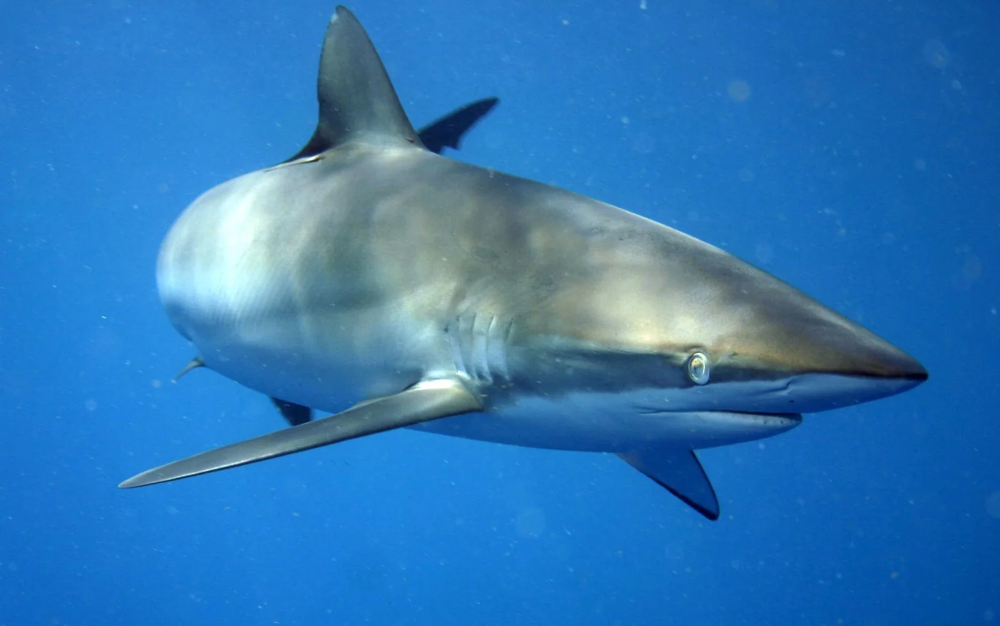

Jardines de la Reina
Ciego de Ávila, Cuba · plongée, snorkeling

Archipel de cayes, de mangroves et de récifs au large de la côte sud de Cuba, parc national depuis 2010. On y plonge uniquement depuis des bateaux-hôtels autorisés, avec un nombre de visiteurs limité.
- Lieu
- Ciego de Ávila, Cuba
- Niveau
- Intermédiaire
- Activités
- plongée, snorkeling
- Type d'eau
- Mer / océan
- Coordonnées
- 20.82, -78.92 (position approximative du secteur)
Dangers à connaître
- Requins de récif fréquents en plongée : suis strictement les consignes du guide.
- Sites très éloignés des secours : plonge prudemment et vérifie ton assurance.
- Crocodiles américains dans les mangroves : ne te baigne jamais hors des sorties encadrées.
Le conseil d'Ocean Buddy
L’accès passe exclusivement par les opérateurs autorisés, à réserver longtemps à l’avance : aucune visite libre n’est possible.
Ouvrir dans Ocean Buddy Télécharger sur l'App Store
Source : Fiche Ocean Buddy · septembre 2026 · à vérifier localement.